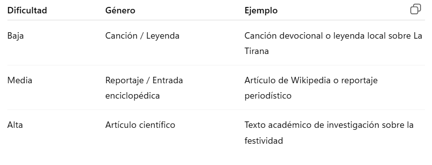
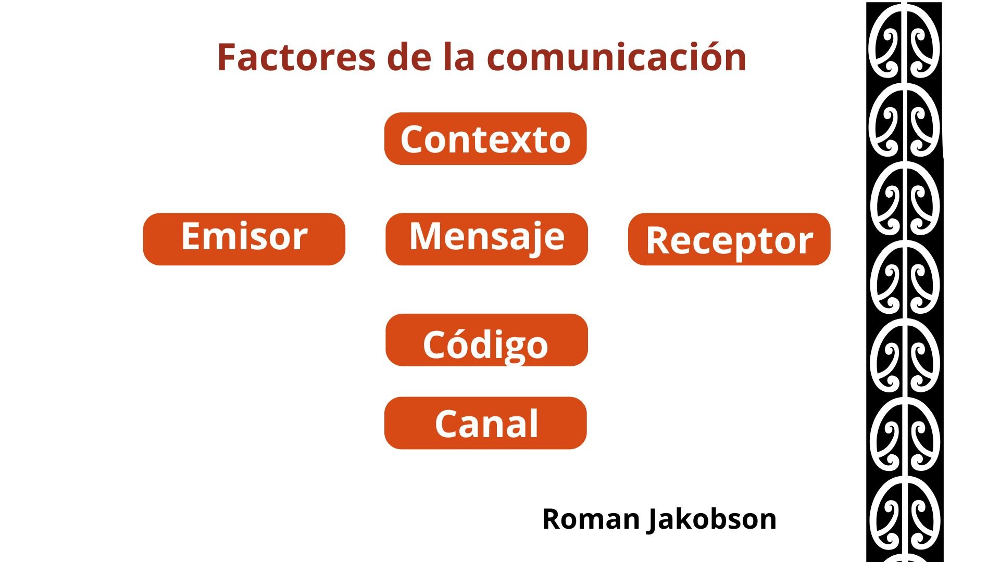

Etapa 1: Antes de la lectura
Tiempo: 1 clase de 40 - 90 minutos
Objetivos:
- Activar conocimientos previos sobre la Fiesta de la Tirana.
- Familiarizarse con el género discursivo asignado, su estructura, propósito comunicativo y lenguaje característico.
Primera actividad:
En primer lugar podemos conversar con la clase completa acerca de lo que los y las estudiantes saben o conocen de la fiesta de La Tirana. Algunas preguntas para motivar el diálogo pueden ser:
1. ¿Has escuchado hablar de la Fiesta de La Tirana? ¿Qué sabes o qué te imaginas que ocurre en ella?
2. ¿Por qué crees que las personas siguen celebrando estas fiestas tradicionales hoy en día? ¿Qué importancia pueden tener para una comunidad?
Una breve definición:
La Fiesta de La Tirana es una de las celebraciones religiosas y culturales más importantes del norte de Chile. Se realiza cada año en el poblado de La Tirana, en la región de Tarapacá, durante el mes de julio, y convoca a miles de fieles, bailarines y visitantes que rinden homenaje a la Virgen del Carmen, considerada la patrona de Chile.
Esta festividad combina elementos de la tradición católica con expresiones andinas y populares, reflejando el sincretismo cultural característico del norte del país. Destacan sus danzas devocionales, como los diablos, tinkus, morenos o caporales, junto a la música de bandas de bronce y una profunda espiritualidad.
A continuación te dejo un video que nos entrega más información para complementar. Se destacan los orígenes e historia de la fiesta, las características de los bailes más populares y la importancia de esta fiesta como sincretismo cultural del norte de Chile.
Artenlaclase (2020). Diversidad cultural: Fiesta de La Tiarana [Video]. YouTube. https://youtu.be/abc123def456
Licencia: Creative Commons Atribución (CC BY)
Segunda actividad grupal:
Antes de leer los textos seleccionados sobre La Tirana, trabajaremos en grupos para conocer las características del género discursivo al que pertenece cada uno. Este ejercicio nos permitirá identificar su propósito, estructura y estilo, lo que facilitará una lectura más comprensiva y crítica en la próxima sesión.
¿Qué es un género discursivo?
Según el lingüista ruso Mijaíl Bajtín, los géneros discursivos son formas relativamente estables de comunicación que usamos en distintas situaciones sociales. Cada género tiene características propias de estructura, propósito comunicativo y estilo lingüístico, y están determinados por el contexto en que se producen y circulan.
¿Qué haremos?
- El/la docente organizará los grupos. Puede decidir cuántos grupos formar, cuántas personas integrarán cada uno y qué texto se asignará a cada grupo, considerando su nivel de dificultad.
- Cada grupo investigará las características generales del género discursivo asignado (no el contenido del texto aún, solo su forma), con apoyo en el esquema de la comunicación de Román Jakobson, que permite analizar los elementos presentes en todo acto comunicativo.
- Reorganicen el mobiliario si es necesario para trabajar cómodamente en grupo.
- Completen el organizador gráfico entregado, que se basa en el esquema de Jakobson, y dejen registro de su análisis. Este será revisado al inicio de la siguiente clase.
Géneros discursivos trabajados

Esquema de la comunicación de Jakobson (para el organizador gráfico):

Emisor: ¿Quién produce el texto?
Receptor: ¿A quién está dirigido?
Mensaje: ¿Qué se comunica?
Código: ¿Qué lenguaje o sistema se usa?
Canal: ¿Cómo se transmite el mensaje?
Contexto: ¿Cuál es la situación o realidad a la que hace referencia el mensaje?